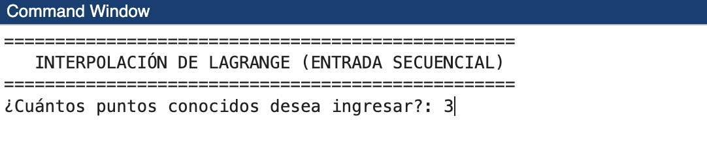
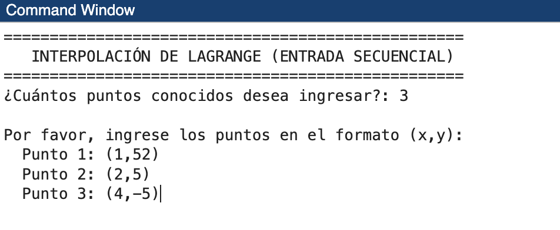
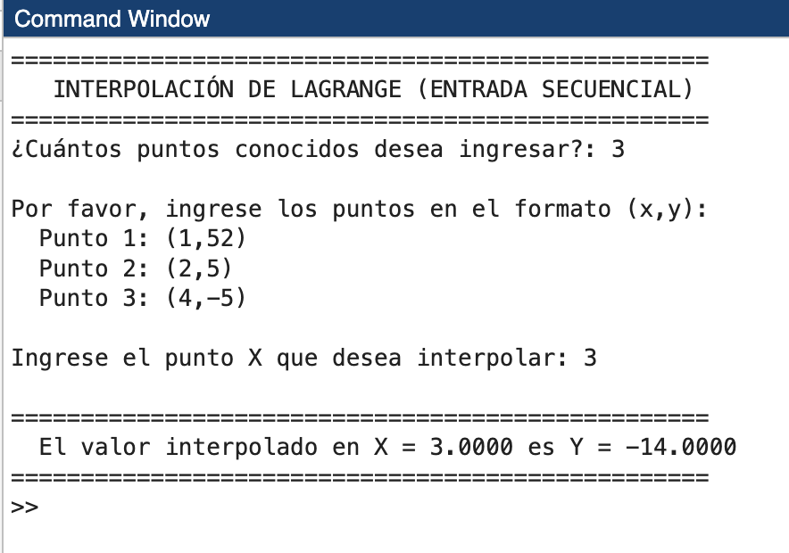
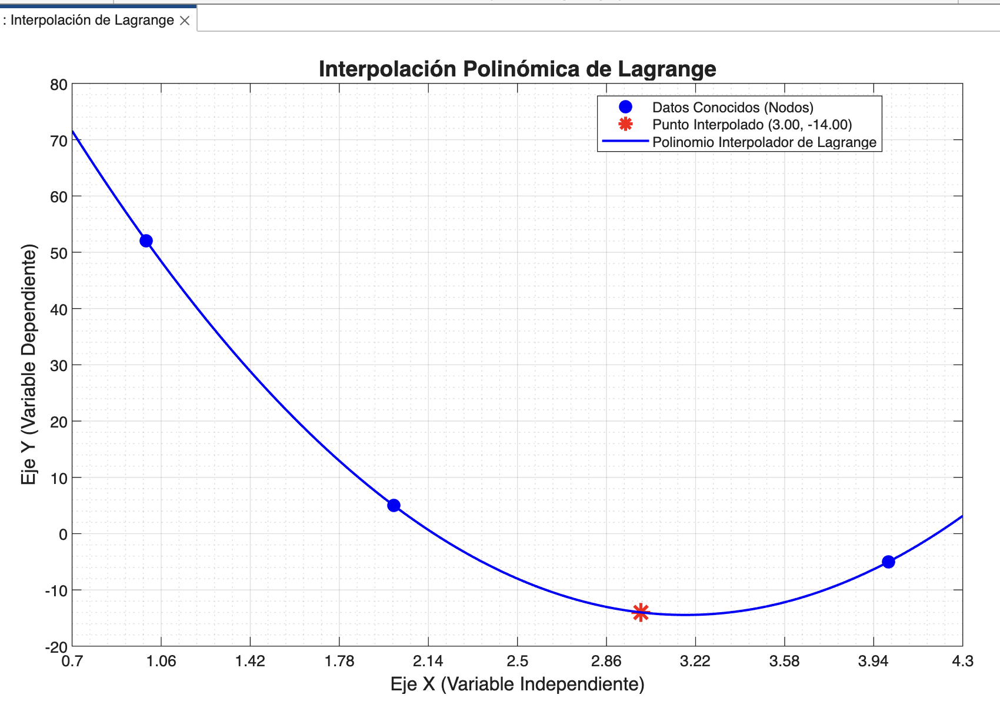
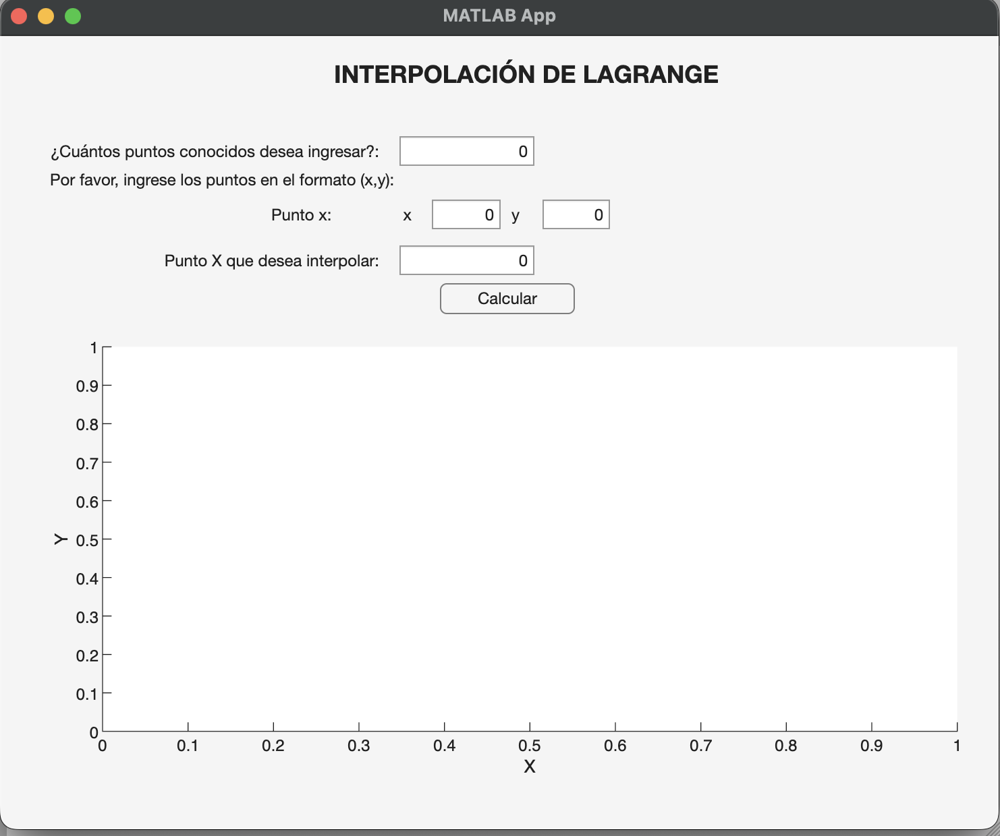
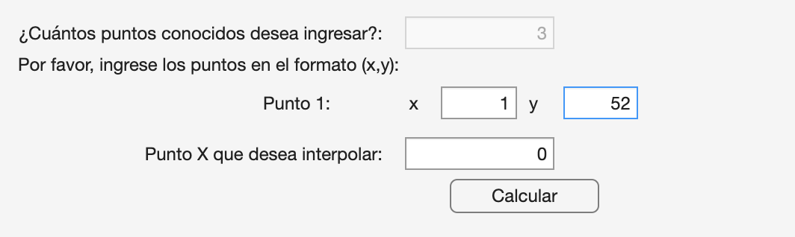
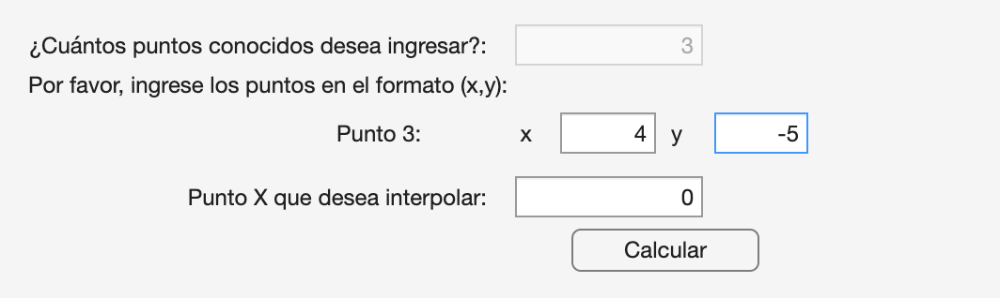
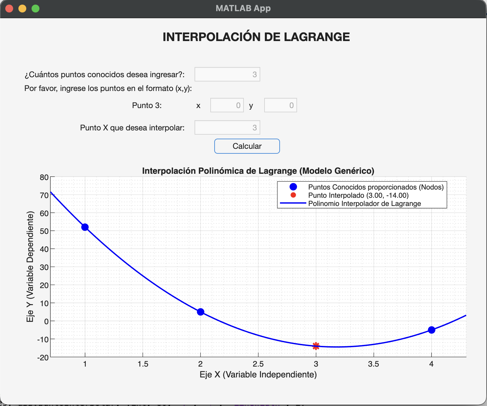

¿Qué es la interpolación?
La interpolación es una técnica fundamental en los métodos numéricos que se utiliza para estimar valores intermedios entre puntos de datos precisos y conocidos. A diferencia de la regresión, que busca una tendencia general, la interpolación genera una curva que pasa exactamente a través de todos los puntos de datos proporcionados.
¿Para qué sirve y dónde se aplica?
Este método numérico es vital cuando se trabaja con información tabulada de alta precisión donde no se realizaron mediciones en cada punto posible. Algunas aplicaciones comunes incluyen:
Termodinámica
Expandir tablas de vapor para encontrar la energía interna o entalpía a una temperatura específica que no figura en la tabla original.
Ingeniería Civil
Estimar la transferencia de calor o la ubicación de la termoclina en lagos basándose en profundidades medidas.
Procesamiento de Señales
Reconstruir formas de onda a partir de muestras de datos dispersas.
Economía
Determinar valores intermedios en tablas de interés para análisis financieros.
Para calcular la interpolación dados n + 1 puntos conocidos y asociados a datos, existe un polinomio de grado n que pasa a través de todos los puntos, el cual es llamado polinomio de interpolación, de los cuales existen dos alternativas más utilizadas: el polinomio de Newton y el de Lagrange. En esta página nos centraremos en el método de Lagrange.
El Polinomio de Interpolación de Lagrange
El método de Lagrange es una reformulación del polinomio de Newton que evita el cálculo de diferencias divididas. Es preferido cuando se conoce el grado del polinomio de antemano, ya que su estructura es más sencilla de programar.
Lógica visual del método: Cada término del polinomio está diseñado para ser igual a 1 en su punto correspondiente xi y 0 en todos los demás puntos de datos. Al sumar estos términos ponderados por sus respectivos valores de y, se obtiene un único polinomio que pasa por todos los puntos.
Procedimiento paso a paso
Para interpolar un valor x usando n+1 puntos:
Identificar los datos
Listar los puntos conocidos: (x0, y0), (x1, y1), …, (xn, yn).
Calcular las funciones de Lagrange (Li)
Para cada punto i, se construye una fracción que utiliza todos los otros valores de x excepto el propio xi.
Ponderar con los valores de y
Multiplicar cada función Li(x) por su valor correspondiente f(xi).
Sumar los resultados
La suma de todos estos productos nos da el valor estimado fn(x).
Ejemplo manual resuelto
Supongamos que queremos estimar el logaritmo natural de 2 (x = 2) usando tres puntos conocidos:
Paso 1: Calcular L0(2)
Paso 2: Calcular L1(2)
Paso 3: Calcular L2(2)
Paso 4: Sumar los productos (Li · yi)
Resultado: El valor estimado es 0.5659, una aproximación al valor real de ln(2) ≈ 0.6931. Al usar un polinomio de mayor grado o puntos más cercanos al objetivo, la exactitud mejora significativamente.
Programación del método usando MATLAB
Utilizando la herramienta de MATLAB se puede automatizar el proceso de cálculo, creando un programa ya sea en consola o como aplicación gráfica que permita el ingreso de los puntos conocidos y el punto que necesitamos interpolar, y este realice los cálculos respectivos.
Solución 1: Programa por consola
Como primer paso el programa solicita la cantidad de puntos conocidos que el usuario necesite ingresar.

Una vez ingresada la cantidad, el programa va solicitando uno a uno dichos puntos en el formato de coordenadas (x, y).

Finalmente, el programa solicita el valor de x que necesitamos interpolar.
Una vez ingresada toda la información, el programa realiza todos los cálculos descritos anteriormente y muestra el resultado en consola, adicionalmente se genera un gráfico que permite interpretar de mejor manera los resultados obtenidos.


Código fuente: El código fuente de este programa puede obtenerse desde los archivos
del proyecto (Lagrage.m) en la sección de recursos.
Solución 2: Aplicación gráfica (App Designer)
En esta sección se describe la solución del mismo método utilizando una aplicación de MATLAB App Designer. La aplicación tiene un diseño interactivo que realiza el mismo trabajo que el programa anterior, solicitando primero la cantidad de puntos a ingresar. Una vez ingresados todos los valores, se presiona el botón "Calcular" y la aplicación realiza todos los cálculos y muestra el gráfico resultante y los valores.




Código fuente: El código fuente de esta aplicación puede obtenerse desde los archivos
del proyecto (LagrageApp.mlapp) en la sección de recursos.